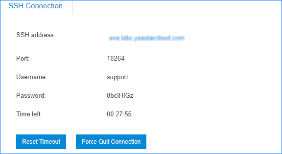
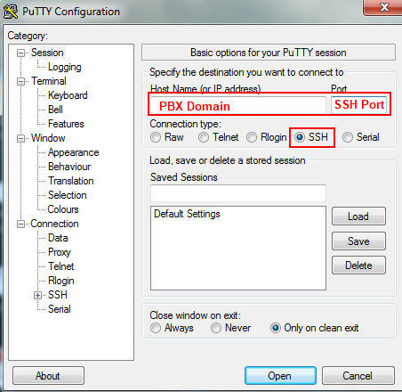
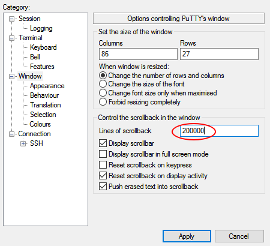

Access the PBX via SSH
To debug the system, you can establish a temporary SSH connection on the PBX, and access the PBX via SSH to check the logs.
-
Establish SSH connection.
- Go to Maintenance > SSH Connection, click Establish Connection.
-
On the Time Settings dialog box, select the time
period in the Timeout drop-down menu, click
OK.
The SSH connection information is displayed on the SSH Connection page.
-
Use PuTTY to access the PBX via SSH.

- Host Name (or IP address): Enter the PBX domain.
- Port: Enter the SSH port.
- Connection Type: Choose SSH.
-
To get more logs in the window, set the Lines of
scrollback to a larger value, click
Apply.

-
Enter the username and password to access the PBX.
- login as: Enter
support. - password: Enter the SSH password.
- login as: Enter